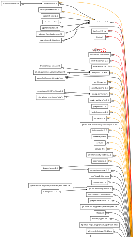

How patches get into the mainline
The use of git (and BitKeeper before it) has brought an end to that era. Once a change gets into somebody's tree, it is relatively unlikely to be lost. It's a much better way of doing things for everybody involved; important fixes no longer get lost, and developers, rather than checking for their patches and resending them, can now devote themselves to the creation of new bugs to be fixed.
Beyond that, though, things have changed in that, for most developers, the way to get a patch into the kernel is no longer to send it to Linus. Instead, they will pass their work through a subsystem tree. This mechanism is reasonably well understood, but, to your editor's knowledge, nobody has taken a hard look at what the flow of patches into the mainline looks like now. With that in mind, your editor set out with the complementary goals of (1) charting the paths patches take on their way to Linus, and (2) figuring out how Graphviz works. A certain amount of success was achieved on both fronts.
Back in the BitKeeper days, your editor asked Larry McVoy if there was any way to track which repositories a specific changeset had passed through; unfortunately, that information was not preserved by BitKeeper. As it turns out, git does a better job of keeping that information around - though it is not a perfect record keeper either. When Linus pulls a tree from some other developer, git will (usually) add a "merge commit" to the repository which indicates where the other tree came from. This commit has (at least) two parent commits; one is whatever was at the tip of Linus's tree prior to the merge, while the other points to the tip of the stream of changesets which came from the pulled tree. Multiple trees can be merged at once; in this case, there will be more than two parent commits.

A piece of the resulting graph can be seen on the right; click on the thumbnail to see the whole thing, which is quite large. It is, arguably, a messy picture, but some interesting things jump out of it. At the top of the list is the fact that the graph is quite shallow: it shows 107 trees, almost all of which feed directly into the mainline. For the 2.6.29 development cycle, only a handful of trees are pulled into a separate subsystem tree before going to Linus, and exactly one tree feeds patches through two other layers. For the most part, subsystem maintainers are going straight to Linus without dealing with middle managers.
975 of 11,260 changesets went directly into the mainline without existing in any subsystem tree at all. Some of those are the merge changesets created by Linus as he pulls trees; many of the rest are the patches which go by way of Andrew Morton. Linus wrote a very small number of them himself. And, occasionally, Linus merges a patch sent directly from a developer, but that is a relatively uncommon occurrence.
When interpreting these numbers, there is one important thing which must be kept in mind: by default, git will not record merge information when it is doing a "fast forward" merge. If a developer pulls down the current mainline repository, adds some patches on top, then gets Linus to pull the patches before anything else changes in the mainline, those patches can be added directly to the mainline without the need for a merge commit to hold things together. Fast-forward merges into the mainline are (probably) fairly rare, but they may well happen more often at the subsystem level. So this kind of information, when generated from a git repository, will never be 100% complete; some merges (and the repositories they came from) will be invisible.
For 2.6.29, two networking trees maintained by David Miller were the biggest waypoint for changesets (1910 of them) headed into the mainline; of those, many came from John Linville's wireless tree. After that, the "linux-2.6-tip" tree (the tree maintained by Ingo Molnar and company for a few subsystems, including the x86 architecture and the scheduler) contributed 1270 changesets to this development cycle. Other large sources of changes were the btrfs tree (910 changesets - the entire btrfs development history), the Video4Linux tree, the sound tree, and the ARM architecture tree. At the other end of the scale, twelve trees were the source of five or fewer changes.
For the curious, the statistics are available in text form along with the full names of the
relevant git repositories. The code which generated this information is
available as part of the gitdm repository at
git://git.lwn.net/gitdm.git. An obvious place for future
improvement is to track information about branches within repositories;
this would increase the resolution of the whole picture. But that's for
another development cycle; stay tuned.
| Index entries for this article | |
|---|---|
| Kernel | Development model/Contributor statistics |
| Kernel | Git |
Posted Feb 12, 2009 2:13 UTC (Thu)
by nevets (subscriber, #11875)
[Link]
Even if I base off one of his branches and he pulls it into that branch. After the merge window closes, Ingo cherry picks the patches that will go to Linus. Only the changes that fix bugs are usually in that category. If I send Ingo a series of changes that also contain a couple of bug fixes. He may need to cherry pick those bug fixes to send to Linus.
All of the cherry picks lose the origin of the repo they came from.
Posted Feb 12, 2009 12:56 UTC (Thu)
by jwboyer (guest, #23296)
[Link] (3 responses)
Just something I found interesting.
Posted Feb 12, 2009 15:09 UTC (Thu)
by corbet (editor, #1)
[Link] (2 responses)
Posted Feb 13, 2009 1:55 UTC (Fri)
by junkio (guest, #5743)
[Link]
Posted Feb 13, 2009 2:22 UTC (Fri)
by jwboyer (guest, #23296)
[Link]
I blame it on the fact that a very pretty graph is placed rather close and it's shininess distracted my brain.
Sorry for the superfluous comment (twice now!).
Posted Feb 13, 2009 0:11 UTC (Fri)
by rgilton (subscriber, #31330)
[Link]
cherry picking
How patches get into the mainline
In fact, that's why the article expends a paragraph on the problem of fast-forward merges. The information is simply lost in that case, and there's really not much that can be done about it.
Fast-forward merges
Fast-forward merges
Fast-forward merges
How patches get into the mainline